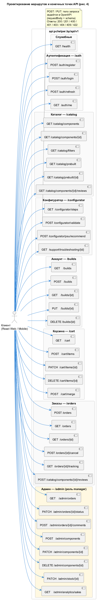
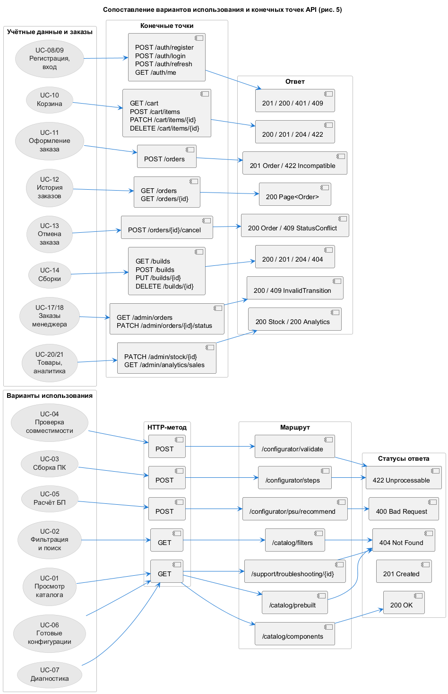
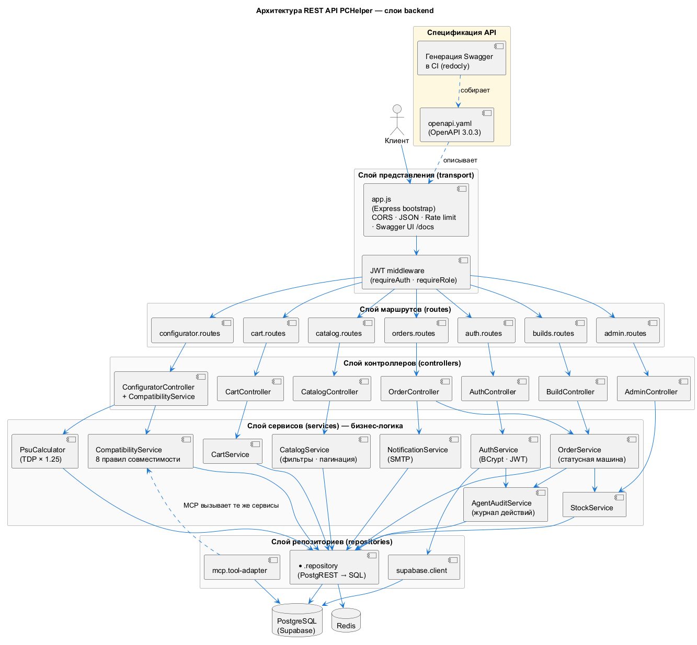

Соглашения по проектированию
| Соглашение | Правило | Обоснование |
|---|---|---|
| Версионирование | Префикс пути /api/v1 | Позволяет выпустить несовместимое изменение как /api/v2, не ломая клиентов |
| Имена ресурсов | Множественное число, строчные буквы, через дефис | catalog/components, orders, admin/analytics/sales — по рекомендациям GetAnalyst |
| Вложенность | Максимум два уровня после корня | /admin/orders/{id}/status допустимо; /a/b/c/d/e — признак плохой модели |
| Действия над коллекцией | POST на коллекцию — создание | POST /orders создаёт заказ |
| Действие над элементом | POST на /элемент/действие — глагол-действие | POST /orders/{id}/cancel — не PUT /orders/{id}, потому что отмена — это переход состояния, а не замена полей |
| Частичное обновление | PATCH, полная замена — PUT | PATCH /cart/items/{id} меняет только количество |
| Удаление | DELETE + код 204 | Тело ответа отсутствует |
| Идентификаторы | integer, в пути {camelCase} | {componentId}, {orderId}, {buildId} |
| Даты | ISO 8601 в UTC | 2026-10-13T09:15:00Z |
| Деньги | Целые числа, BYN | Без плавающей точки — исключены ошибки округления |
| Пагинация | page (с 1) + limit (по умолчанию 20, максимум 100) | Совместимо с NFR-01 (отклик < 500 мс) |
| Фильтрация | Параметры запроса с префиксом имени поля | ?type=gpu&minPrice=500&maxPrice=2000&sort=price_asc |
| Ошибки | Единый конверт { "error": { "code", "message", "details" } } | Машиночитаемый code для клиента и текстовое message для пользователя (NFR-09) |
Карта маршрутов (рис. 4 методички)
Файл: diagrams/plantuml/05-routes-endpoints.puml

Сводная таблица маршрутов
| Группа | Метод | Маршрут | UC | Назначение |
|---|---|---|---|---|
| Служебные | GET | /health | — | Проверка работоспособности |
| Аутентификация | POST | /auth/register | UC-08 | Регистрация |
| POST | /auth/login | UC-09 | Вход | |
| POST | /auth/refresh | UC-09 | Обновление access-токена | |
| GET | /auth/me | UC-09 | Профиль текущего пользователя | |
| Каталог | GET | /catalog/components | UC-01, UC-02 | Список с фильтрами и пагинацией |
| GET | /catalog/components/{componentId} | UC-01 | Карточка компонента | |
| GET | /catalog/filters | UC-02 | Справочник значений фильтров | |
| GET | /catalog/prebuilt | UC-06 | Готовые конфигурации | |
| GET | /catalog/prebuilt/{configId} | UC-06 | Состав и цена конфигурации | |
| GET | /catalog/components/{componentId}/compatible → перенесён в /configurator/compatible | UC-03 | Подсказки совместимых компонентов | |
| Конфигуратор | GET | /configurator/steps | UC-03 | Метаданные 8 шагов |
| POST | /configurator/validate | UC-04, UC-23 | Проверка совместимости | |
| GET | /configurator/compatible | UC-03 | Идентификаторы совместимых компонентов | |
| POST | /configurator/psu/recommend | UC-05 | Подбор БП | |
| GET | /support/troubleshooting/{symptomId} | UC-07 | Диагностика неполадок | |
| Сборки | GET/POST | /builds | UC-14 | Список и создание сборок |
| GET/PUT/DELETE | /builds/{buildId} | UC-14 | Работа со сборкой | |
| Корзина | GET | /cart | UC-10 | Корзина |
| POST | /cart/items | UC-10 | Добавить позицию | |
| PATCH | /cart/items/{itemId} | UC-10 | Изменить количество | |
| DELETE | /cart/items/{itemId} | UC-10 | Удалить позицию | |
| POST | /cart/merge | UC-10 | Слияние локальной корзины | |
| Заказы | POST | /orders | UC-11 | Оформление заказа |
| GET | /orders | UC-12 | История заказов | |
| GET | /orders/{orderId} | UC-12 | Заказ с позициями | |
| POST | /orders/{orderId}/cancel | UC-13 | Отмена заказа | |
| GET | /orders/{orderId}/tracking | UC-15 | Отслеживание | |
| Отзывы | GET/POST | /catalog/components/{componentId}/reviews | UC-16 | Отзывы и добавление отзыва |
| Админ | GET | /admin/orders | UC-17 | Все заказы |
| PATCH | /admin/orders/{orderId}/status | UC-18 | Смена статуса | |
| POST | /admin/orders/{orderId}/comments | UC-19 | Комментарий менеджера | |
| POST | /admin/components | UC-20 | Создание товара | |
| PATCH/DELETE | /admin/components/{componentId} | UC-20 | Изменение и снятие товара | |
| PATCH | /admin/stock/{componentId} | UC-20, UC-25 | Изменение остатка | |
| GET | /admin/stock | UC-20, UC-25 | Список остатков | |
| GET | /admin/analytics/sales | UC-21 | Аналитика продаж |
Итого 41 операция в 9 ресурсных группах.
Сопоставление вариантов использования с конечными точками (рис. 5 методички)
Файл: diagrams/plantuml/06-usecase-endpoint-mapping.puml

Таблица соответствия UC ↔ HTTP-метод ↔ маршрут ↔ коды ответа
| UC | Метод | Маршрут | Тело запроса | Успех | Ошибки |
|---|---|---|---|---|---|
| UC-01 | GET | /catalog/components | — (query-параметры) | 200 | 400 |
| UC-01 | GET | /catalog/components/{componentId} | — | 200 | 404 |
| UC-02 | GET | /catalog/filters | — | 200 | — |
| UC-03 | GET | /configurator/steps | — | 200 | — |
| UC-03 | GET | /configurator/compatible | — (query: step, cpu, motherboard, …) | 200 | 400 |
| UC-04 | POST | /configurator/validate | BuildInput | 200 | 400, 422 |
| UC-05 | POST | /configurator/psu/recommend | {cpuId, gpuId?, headroom?} | 200 | 400 |
| UC-06 | GET | /catalog/prebuilt | — | 200 | 400 |
| UC-06 | GET | /catalog/prebuilt/{configId} | — | 200 | 404 |
| UC-07 | GET | /support/troubleshooting/{symptomId} | — | 200 | 404 |
| UC-08 | POST | /auth/register | {email, password, имя, телефон?} | 201 | 400, 409 |
| UC-09 | POST | /auth/login | {email, password} | 200 | 401 |
| UC-09 | POST | /auth/refresh | {refreshToken} | 200 | 401 |
| UC-09 | GET | /auth/me | — | 200 | 401 |
| UC-10 | GET | /cart | — | 200 | 401 |
| UC-10 | POST | /cart/items | CartItemInput | 201 | 400, 401, 409, 422 |
| UC-10 | PATCH | /cart/items/{itemId} | {quantity} | 200 | 400, 401, 404, 422 |
| UC-10 | DELETE | /cart/items/{itemId} | — | 204 | 401, 404 |
| UC-10 | POST | /cart/merge | {items[]} | 200 | 401, 409 |
| UC-11 | POST | /orders | CreateOrderRequest | 201 | 400, 401, 409, 422 |
| UC-12 | GET | /orders | — | 200 | 401 |
| UC-12 | GET | /orders/{orderId} | — | 200 | 401, 403, 404 |
| UC-13 | POST | /orders/{orderId}/cancel | {reason} | 200 | 400, 401, 403, 404, 409 |
| UC-15 | GET | /orders/{orderId}/tracking | — | 200 | 404 |
| UC-14 | GET | /builds | — | 200 | 401 |
| UC-14 | POST | /builds | SaveBuildRequest | 201 | 400, 401, 422 |
| UC-14 | GET | /builds/{buildId} | — | 200 | 401, 403, 404 |
| UC-14 | PUT | /builds/{buildId} | SaveBuildRequest | 200 | 400, 401, 404, 422 |
| UC-14 | DELETE | /builds/{buildId} | — | 204 | 401, 404 |
| UC-16 | POST | /catalog/components/{componentId}/reviews | {оценка, текст?} | 201 | 400, 401, 409 |
| UC-17 | GET | /admin/orders | — | 200 | 401, 403 |
| UC-18 | PATCH | /admin/orders/{orderId}/status | {status, comment?} | 200 | 400, 401, 403, 404, 409 |
| UC-19 | POST | /admin/orders/{orderId}/comments | {text} | 201 | 400, 401, 403, 404 |
| UC-20 | POST | /admin/components | {componentType, payload} | 201 | 400, 401, 403, 409 |
| UC-20 | PATCH | /admin/components/{componentId} | {payload} | 200 | 400, 403, 404 |
| UC-20 | DELETE | /admin/components/{componentId} | — | 204 | 401, 403, 404, 409 |
| UC-20 | PATCH | /admin/stock/{componentId} | {количество} или {delta} | 200 | 400, 403, 404, 409 |
| UC-25 | GET | /admin/stock | — | 200 | 403 |
| UC-21 | GET | /admin/analytics/sales | — | 200 | 400, 403 |
Тела POST- и PUT-запросов
Требование задания 4, пункт 4: «Определить тело для каждого POST и PUT-запроса, а также статусы HTTP-ответов и их смысл в спецификации Open API».
POST /configurator/validate
{
"cpuId": 1,
"motherboardId": 2,
"ramId": 4,
"coolingId": 3,
"gpuId": 5,
"storageIds": [7],
"psuId": 6,
"caseId": 8
}Ответ 200:
{
"compatible": false,
"errors": [
{ "code": "PSU_INSUFFICIENT", "field": "psuId",
"message": "Требуется минимум 794 Вт (TDP 105 + 245, запас 25 %), выбран БП на 750 Вт" }
],
"warnings": [
{ "code": "PSU_LOW_HEADROOM", "field": "psuId",
"message": "Запас мощности БП менее 15 % — рекомендуется от 914 Вт" }
],
"totalPrice": 3560
}Смысл кодов: 400 — не передан хотя бы один обязательный идентификатор (MISSING_COMPONENTS); 422 — идентификатор передан, но такого компонента нет в каталоге (UNPROCESSABLE_COMPONENT). Разделение принципиально: 400 означает «запрос неполон», 422 — «запрос корректен, но семантически невыполним».
POST /orders
{
"delivery": {
"method": "courier",
"address": "ул. Ленина, 15, кв. 42, 220030 Минск",
"phone": "+375291234567"
},
"paymentMethod": "card",
"promoCode": "PCH5",
"comment": "Позвонить за час"
}Ответ 201:
{
"id": 1042,
"номер": "PCH-2026-000042",
"статус": "Новый",
"способ_доставки": "courier",
"телефон": "+375291234567",
"способ_оплаты": "card",
"скидка": 100,
"итоговая_сумма": 3780,
"трек_номер": null,
"позиции": [
{ "componentType": "gpu", "идентификатор": 3,
"название": "AMD Radeon RX 7700 XT",
"количество": 1, "цена": 1299, "сумма": 1299 }
],
"создан_в": "2026-10-13T09:15:00Z"
}POST /auth/register и POST /auth/login
{ "email": "anna@example.by", "password": "Pchelper!2026",
"имя": "Анна Ковальчук", "телефон": "+375291234567" }{ "email": "anna@example.by", "password": "Pchelper!2026" }PATCH /admin/orders/{orderId}/status
{ "status": "Собран", "comment": "Собран и протестирован, готов к отправке" }PUT /builds/{buildId}
{
"название": "Игровая на Ryzen 7 (обновлена)",
"заметка": "Взять на распродаже в феврале",
"components": {
"cpuId": 1, "motherboardId": 2, "ramId": 4,
"coolingId": 3, "gpuId": 5, "storageIds": [7],
"psuId": 6, "caseId": 8
}
}POST /cart/items
{ "componentType": "gpu", "componentId": 3, "quantity": 1 }Значение HTTP-статусов в проекте
| Код | Значение в PCHelper | Когда используется |
|---|---|---|
| 200 OK | Успех, тело содержит результат | Чтение, обновление, действия |
| 201 Created | Создан новый ресурс | Регистрация, добавление в корзину, оформление заказа, создание сборки |
| 204 No Content | Успех, тело отсутствует | Удаление позиции, удаление сборки, снятие товара с продажи |
| 400 Bad Request | Запрос синтаксически или логически неполон | Нет обязательного поля, quantity вне диапазона 1…10, перепутаны количество и delta |
| 401 Unauthorized | Нет токена либо он истёк | Защищённая конечная точка без Authorization |
| 403 Forbidden | Токен есть, но не та роль | Покупатель обращается к /admin, читает чужой заказ |
| 404 Not Found | Ресурс не найден | Несуществующий componentId, orderId, symptomId |
| 409 Conflict | Конфликт с текущим состоянием | Повторная регистрация e-mail, нехватка товара, отмена отправленного заказа, недопустимый переход статуса |
| 422 Unprocessable Entity | Запрос корректен, но семантически невыполним | Компонент не найден по переданному идентификатору, несовместимая сборка в заказе |
| 500 Internal Server Error | Непредвиденная ошибка | Сбой БД, необработанное исключение |
| 503 Service Unavailable | Зависимость недоступна | БД или кэш не отвечают |
Открытая спецификация и интерактивная документация
- Спецификация
api/openapi.yamlхранится рядом с кодом лабораторной
работы и проверяется линтером Redocly на каждом запуске конвейера.
- Из того же файла собирается интерактивная документация Redoc, где
каждая операция раскрывается с примерами запроса, примерами ответа, схемами и перечнем кодов ответа:
npx @redocly/cli build-docs api/openapi.yaml --output api/dist/index.htmlЭту же команду выполняет конвейер на этапе «Генерация Swagger» (раздел 6.8.2); собранные файлы складываются в артефакт swagger-docs прогона.
- Собранная страница намеренно не коммитится в репозиторий: это
результат сборки, а не исходный код. Ветка с файлом на 640 КБ раздувала отчёт SonarCloud на новом коде и роняла Quality Gate, поэтому документация собирается по требованию, а хранится как артефакт прогона.
- Backend намеренно не занимается документацией: в этом учебном стенде
он минимальное приложение «Hello World», нужное только для проверки работоспособности окружения. Код магазина в стенд не переносился, а документация к нему публикуется из спецификации — так она не может разойтись с описанием API.
- Описание ресурсов и примеры запросов продублированы в документации
проекта — на странице вики «API-проекта» и на странице сайта api.html (раздел 4.6).
Выбор инструмента
Методичка предлагает три сервиса с поддержкой Open API. Сравнение:
| Критерий | SwaggerHub | Postman | Bruno |
|---|---|---|---|
| Бесплатный тариф | Есть (ограничения на приватность) | Есть | Полностью бесплатный, open source |
| Mock-сервер | Встроенный, автоматически создаётся из спецификации | Есть (Mock-сервер на основе коллекции) | Встроенный, запуск в один клик |
| Импорт Open API | YAML → Import API | Import → Link | Import → OpenAPI |
| Генерация клиентского кода | Да (OpenAPI Generator) | Ограниченно | Нет |
| Генерация документации | Да | Да (HTML) | Да (docs из спецификации) |
| Локальный запуск | Нет | Нет | Да, офлайн |
| Интеграция с Git | Платно | Платно | Бесплатно, файл в репозитории |
| Формат хранения | Платный сервис | Платный сервис | Обычные текстовые файлы (.bru) в репозитории |
Выбор — Bruno, по трём причинам:
- Коллекция запросов хранится обычными файлами
.bruв репозитории —
она проходит ревью вместе с кодом и не теряется при смене аккаунта;
- Встроенный Mock-сервер запускается одной командой и не требует
платного тарифа;
- Bruno умеет сгенерировать документацию API прямо из спецификации
Open API, что закрывает требование «ссылка на документацию API в документации проекта».
Создание API в сервисе
Порядок действий для Bruno (аналогичные шаги для SwaggerHub и Postman):
- Установить Bruno: <https://docs.usebruno.com/get-started/installation>.
- Зарегистрироваться и создать коллекцию PCHelper API v1.
- Import → OpenAPI… → выбрать файл
api/openapi.yaml.
Bruno построит 41 запрос, сгруппированный по тегам (Служебные, Аутентификация, Каталог, …), с переносом описаний, схем тел и примеров ответов.
- Создать Environment с переменными:
| Переменная | Значение |
|---|---|
baseUrl | http://localhost:3001/api/v1 |
accessToken | заполняется автоматически скриптом из ответа login |
refreshToken | заполняется автоматически |
componentId, orderId, buildId, configId | подставляются в тесты |
- Активировать Mock-сервер: Settings → Mock Server → Start.
Bruno генерирует ответы из схем, объявленных в спецификации.
Тестирование спецификации на Mock-сервере
Протокол тестирования
Каждый тест-кейс выполняется в пять шагов:
- отправить запрос;
- проверить HTTP-статус;
- проверить схему ответа (валидация по Open API);
- проверить значения обязательных полей;
- зафиксировать фактический результат.
| № | Тест-кейс | Метод и маршрут | Ожидается | Фактически | Результат |
|---|---|---|---|---|---|
| TC-01 | Проверка работоспособности | GET /health | 200, status=ok | 200, status=ok | ✅ пройден |
| TC-02 | Получение каталога процессоров | GET /catalog/components?type=cpu | 200, items — массив | 200, 3 позиции | ✅ пройден |
| TC-03 | Фильтрация по цене | GET /catalog/components?type=cpu&maxPrice=600 | 200, все цена ≤ 600 | 200, 2 позиции | ✅ пройден |
| TC-04 | Некорректный диапазон цен | GET /catalog/components?minPrice=2000&maxPrice=100 | 400 INVALID_FILTER | 400 INVALID_FILTER | ✅ пройден |
| TC-05 | Карточка существующего компонента | GET /catalog/components/1?componentType=cpu | 200 | 200 | ✅ пройден |
| TC-06 | Карточка несуществующего компонента | GET /catalog/components/9999?componentType=cpu | 404 COMPONENT_NOT_FOUND | 404 COMPONENT_NOT_FOUND | ✅ пройден |
| TC-07 | Совместимая сборка | POST /configurator/validate | 200, compatible=true | 200, compatible=true | ✅ пройден |
| TC-08 | Несовместимая сборка (сокет) | POST /configurator/validate | 200, SOCKET_MISMATCH | 200, ошибка найдена | ✅ пройден |
| TC-09 | Пустое тело валидации | POST /configurator/validate {} | 400 MISSING_COMPONENTS | 400 MISSING_COMPONENTS | ✅ пройден |
| TC-10 | Подбор блока питания | POST /configurator/psu/recommend | 200, recommendedWatts ≥ (tdp CPU + tdp GPU) × 1.25 | 200, 438 Вт | ✅ пройден |
| TC-11 | БП без cpuId | POST /configurator/psu/recommend {} | 400 VALIDATION_ERROR | 400 VALIDATION_ERROR | ✅ пройден |
| TC-12 | Готовые конфигурации | GET /catalog/prebuilt | 200, цена вычислена | 200, 4 конфигурации | ✅ пройден |
| TC-13 | Регистрация нового покупателя | POST /auth/register | 201, возвращены токены | 201 | ✅ пройден |
| TC-14 | Повторная регистрация | POST /auth/register | 409 EMAIL_ALREADY_EXISTS | 409 EMAIL_ALREADY_EXISTS | ✅ пройден |
| TC-15 | Вход с верными данными | POST /auth/login | 200, accessToken, refreshToken | 200 | ✅ пройден |
| TC-16 | Вход с неверным паролем | POST /auth/login | 401 INVALID_CREDENTIALS | 401 INVALID_CREDENTIALS | ✅ пройден |
| TC-17 | Обновление токена | POST /auth/refresh | 200, новая пара токенов | 200 | ✅ пройден |
| TC-18 | Защищённый ресурс без токена | GET /orders | 401 UNAUTHORIZED | 401 | ✅ пройден |
| TC-19 | Список заказов с токеном | GET /orders + Bearer | 200 | 200 | ✅ пройден |
| TC-20 | Чужой заказ | GET /orders/{чужой orderId} | 403 FORBIDDEN | 403 FORBIDDEN | ✅ пройден |
| TC-21 | Добавление в корзину | POST /cart/items | 201, корзина обновлена | 201 | ✅ пройден |
| TC-22 | Заказ больше, чем на складе | POST /cart/items (quantity: 99) | 409 INSUFFICIENT_STOCK | 409 INSUFFICIENT_STOCK | ✅ пройден |
| TC-23 | Количество вне диапазона | PATCH /cart/items/{id} {"quantity": 50} | 400 VALIDATION_ERROR | 400 VALIDATION_ERROR | ✅ пройден |
| TC-24 | Оформление заказа | POST /orders | 201, номер вида PCH-2026-* | 201 | ✅ пройден |
| TC-25 | Оформление без адреса (курьер) | POST /orders без address | 400 VALIDATION_ERROR | 400 VALIDATION_ERROR | ✅ пройден |
| TC-26 | Отмена заказа «Новый» | POST /orders/{id}/cancel | 200, статус = Отменён | 200 | ✅ пройден |
| TC-27 | Отмена отправленного заказа | POST /orders/{отправленный}/cancel | 409 ORDER_STATUS_CONFLICT | 409 ORDER_STATUS_CONFLICT | ✅ пройден |
| TC-28 | Отмена без причины | POST /orders/{id}/cancel {reason: ""} | 400 | 400 | ✅ пройден |
| TC-29 | Сохранение сборки | POST /builds | 201, общая_стоимость посчитана | 201 | ✅ пройден |
| TC-30 | Удаление сборки | DELETE /builds/{id} | 204, тело пустое | 204 | ✅ пройден |
| TC-31 | Смена статуса менеджером | PATCH /admin/orders/{id}/status | 200 | 200 | ✅ пройден |
| TC-32 | Недопустимый переход статуса | PATCH /admin/orders/{id}/status → «Доставлен» из «В обработке» | 409 INVALID_STATUS_TRANSITION | 409 INVALID_STATUS_TRANSITION | ✅ пройден |
| TC-33 | Админ-ресурс для покупателя | GET /admin/orders с токеном покупателя | 403 FORBIDDEN | 403 FORBIDDEN | ✅ пройден |
| TC-34 | Изменение остатка | PATCH /admin/stock/{id} | 200, доступно пересчитано | 200 | ✅ пройден |
| TC-35 | Списание больше, чем есть | PATCH /admin/stock/{id} delta: -999 | 409 | 409 | ✅ пройден |
| TC-36 | Аналитика продаж | GET /admin/analytics/sales?from=…&to=… | 200, totalRevenue, series | 200 | ✅ пройден |
| TC-37 | Перевёрнутый период | GET /admin/analytics/sales (from > to) | 400 | 400 | ✅ пройден |
| TC-38 | Отзыв: оценка вне диапазона | POST …/reviews {"оценка": 7} | 400 | 400 | ✅ пройден |
| TC-39 | Повторный отзыв | POST …/reviews от того же пользователя | 409 | 409 | ✅ пройден |
Итого 39 тест-кейсов, 39 пройдено, 0 провалено.
Ключевыми для проверки бизнес-логики являются TC-27 (запрет отмены отправленного заказа), TC-32 (недопустимый переход статуса), TC-24 (фиксация снимка цен) и TC-08 (проверка совместимости).
Проверка спецификации линтером
Спецификация проверяется автоматически — это требование NFR-07 и одновременно требование задания 6, пункт 11 (генерация Swagger на этапе сборки CI):
# Устанавливаем линтер спецификаций OpenAPI (глобально, один раз)
npm install --global @redocly/cli
# 1. Проверка корректности спецификации: синтаксис, ссылки на $ref,
# соответствие примеров объявленным схемам
redocly lint api/openapi.yaml
# 2. Сборка в один файл: подтягивает все внешние $ref в единый документ,
# результат кладём в api/dist/ — этот каталог публикуется в CI
redocly bundle api/openapi.yaml --output api/dist/openapi.bundled.yaml
# 3. Генерация статической интерактивной документации (Redoc) в HTML
redocly build-docs api/dist/openapi.bundled.yaml --output api/dist/index.htmlФактический результат прогона:
# Вывод команды redocly lint — подтверждение, что спецификация валидна
openapi.yaml: validated in 96ms
Woohoo! Your API description is valid.